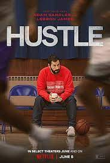

Top 4 Adam Sandler Movies

1. Hustle
This movie is perfect for sports movie fans or anyone who wants to watch a feel-good drama. As a basketball fan, I enjoyed watching the movie because it was very NBA oriented, but if you don't understand basketball, you might be
slightly lost watching Hustle. However, the movie's story, centered around Bo Cruz, is still inspirational regardless of your basketball knowledge. The movie preaches that hard work and resilience will be worth it in the long run. I
would give this movie 5/5 stars.
⭐️ ⭐️ ⭐️ ⭐️ ⭐️
Click here to watch the trailer

2. Happy Gilmore
Happy Gilmore is a movie filled with pure comedy. Although the movie is centered around golf, you don't need to know anything about the sport to understand the movie. Although the movie is a comedy, it still has a sweet message in
that Happy Gilmore is competing for his Grandma. I would give this movie a 5/5 stars.
⭐️ ⭐️ ⭐️ ⭐️ ⭐️
Click here to watch the trailer.

3. The Waterboy
The Waterboy is another Adam Sandler film that is just funny. Bobby Bucher (Adam Sandler) is the main character of the movie. Boucher is a relatable character for many due to the fact that he's endlessly picked on. Following Bobby
Boucher, the “Waterboy's” story is funny and interesting, making him the perfect character. I would give this movie 5/5 stars.
⭐️ ⭐️ ⭐️ ⭐️ ⭐️
Click here to watch the trailer
4. Blended
This movie is different from the other Adam Sandler movies on the list. Although there are comedy moments in the movie, it's more of a heart whelming story of Jim (Sandler) and Lauren's romantic life in South Africa. We get to know
Jim, Laren, and all of their kids in a profound way that allows you to understand the movie well. The people at the South African hotel with Jim and Lauren add an element of comedy because they believe the two of married. I give this
movie 5/5 stars.
⭐️ ⭐️ ⭐️ ⭐️ ⭐️
Click here to watch the trailer.